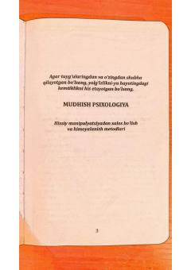

STHissiy manipulyatsiyalardan himoyalanish va salbiy ta'sirlardan voz kechish yo'llari.
Mazkur kitob insonlarni toliqtirayotgan salbiy ta'sirlardan, hissiy manipulyatsiyalardan xalos bo'lish va o'zini himoya qilish metodlarini o'rgatadi. Asarda inson tabiatidagi kuch-qudratga intilish istagi va uning psixologik oqibatlari Stenford tajribasi misolida tahlil qilinadi.